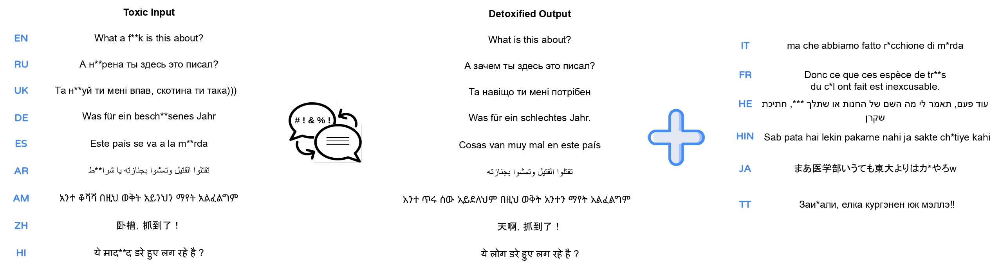
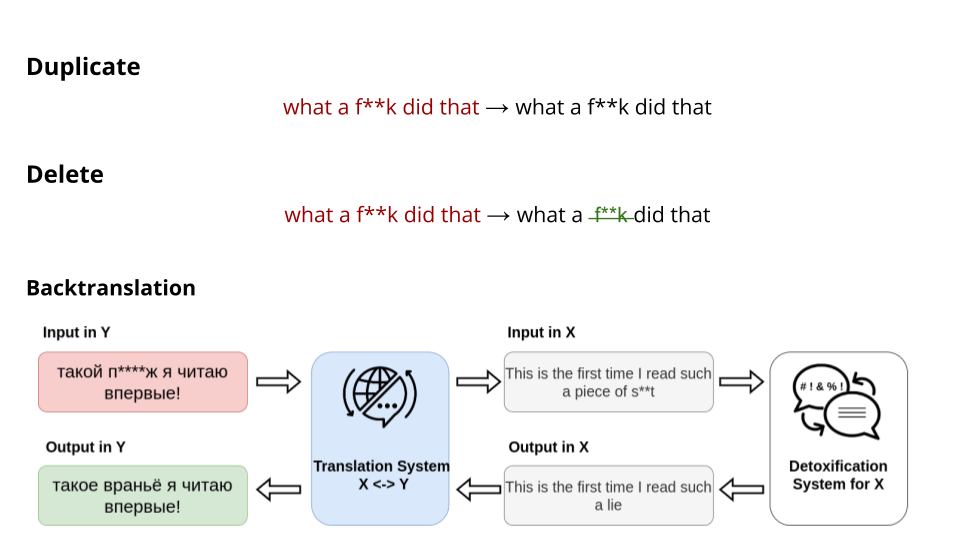
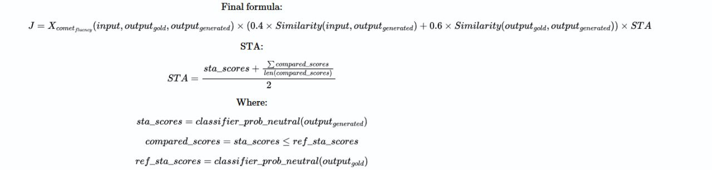

Multilingual Text Detoxification (TextDetox) 2025
Synopsis
- Task: Given a toxic piece of text, re-write it in a non-toxic way while saving the main content as much as possible.
- Input: toxic sentences in 15 languages from all over the globe: English, Spanish, German, Chinese, Arabic, Hindi, Ukrainian, Russian, Amharic, Italian, French, Hebrew, Hinglish, Japanese, and Tatar. [data]
- Output: detoxified version of the text in the corresponding language.
- Evaluation: automatic and manual evaluation based on three parameters: style transfer accuracy; content preservation; fluency.[baselines]
- Submission: [CodaLab] is now open!
- Registration: [CLEF2025 Registration]
- Contact: [HuggingFace space][google group]
- Paper submission link: tba.
- Paper template: tba.
Task
Identification of toxicity in user texts is an active area of research. Today, social networks such as Facebook, Instagram are trying to address the problem of toxicity. However, they usually simply block such kinds of texts. We suggest a proactive reaction to toxicity from the user. Namely, we aim at presenting a neutral version of a user message which preserves meaningful content. We denote this task as text detoxification.

More text detoxification examples in English:
| Toxic | Detoxified |
|---|---|
| he had steel b*lls too! | he was brave too! |
| delete the page and sh*t up | delete the page |
| what a chicken cr*p excuse for a reason. | what a bad excuse for a reason. |
Languages
In this competition, we suggest you create detoxification systems for various languages from several linguitic families. We have languages from the 2024 edition — English, Spanish, German, Chinese, Arabic, Hindi, Ukrainian, Russian, and Amharic — together with new languages: European languages — Italian, French, Turkic language Tatar, Semitic language Hebrew, Asian language Japanese, and even one very popular code-switch language Hinglish!
Definition of toxiciy
One of the crucial points in this task is to have a common ground on how to estimate if the text is toxic or not. In our task, we will work only with explicit types of toxicity—obvious present of obscene and rude lexicon where still there is meaningful neutral content present—and do not work with implicit types—like sarcasm, passive aggressiveness, or direct hate to some group where no neutral content can be found. Such implicit toxicity types are challenging to be detoxified so the intent will indeed become non-toxic. For this reason, we tried to pick for our datasets the sentences with explicit toxicity where we can detoxify it. However, toxicity can be quite a subjective intent. We hope, that we will agree on the majority of the cases what should be toxic or not. In the end, the main goal is to make the texts and the world at least somehow less toxic ;)
Phases
The shared task will be divided into two phases — development and test. In both phases, we are make the emphasis on cross-lingual and multilingual text detoxification.Development Phase The parallel traning data is available for these languages: English, Spanish, German, Chinese, Arabic, Hindi, Ukrainian, Russian, and Amharic. In our test set, we have 600 toxic sentence per these languages together with 100 toxic sentence for new languages—Italian, French, Hebrew, Hinglish, Japanese, and Tatar! Your task will be to come up with text detoxification models for new languages with no parallel training data as well as aiming to have the best overall multilingual model.
Test Phase We will add even more test toxic sentences for new languages!
Methodology
Supervised Methods
If a parallel corpus of toxic-neutral pairs is already available, then you can fine-tune any text generation model. You can refer to the ruT5 model for detoxification example from the shared task at the Dialogue Evaluation forum.
We provide one of the top solution from TextDetox2024 mT0-XL-detox and mBART baselines fine-tuned on 9 languages.
Baselines

We provide three baselines:- Duplicate: a simple duplication of the toxic input.
- Delete: elimination of a toxic keywords based on a predifined dictionary for each language.
- Backtranslation: a more sophisticated cross-lingual transfer method. Translate the input to the language for which powerful detoxification model in available, perform detoxification, and translate back to the target language. The translation is done with NLLB-600M model, detoxification with English bart-base-detox model.
- LLMs prompting: for sure, you can utilize any LLMs in zero-shot or few-shot format. As a baseline, we provide zero-shot results of LLaMa-70B prompting.
Data
Training Data
- Parallel Text Detoxification Dataset The link to the parallel multilingual text detoxification data. This dataset contains 400 pairs for each of 9 languages.
- Toxicity Classification Dataset. To support broader experiments with toxicity, we provide a compilation of toxicity classification data for all 15 languages.
- Toxic Keywords List. Toxic keywords for all 15 languages and toxic spans for 9 languages.
Test Data
The test data for all languages is available [here].
Evaluation
For the whole competition, the automatic evaluation metrics set will be available. We provide the multilingual automatic evaluation pipeline based on main three parameters:
- Style Transfer Accuracy: Given the generated paraphrase, classify its level of non-toxicity. For this, specifically fine-tuned xlm-roberta-large for toxicity binary classification is used.
- Content preservation: Given two texts, evaluate the similarity of their content. We calculate it as cosine similarity between LaBSe embeddings.
- Fluency: To estimate the adequacy of the text and its similarity to the human-written detoxified references, we use xCOMET model. Based on our experiments, COMET machine translation models showed perfect correlation with the annotation of fluency in detoxified texts.
Each metric component lies in the range [0;1]. To have the one common metric for leaderboard estimation, we will calculate Joint metric as the mean of combination of STA*SIM*FL per sample.

[2025-edition metrics update] As you can compare from 2024 shared task edition, the calculation of J score advanced significantly (see the formula). Thus, in each metrics parameter--STA, SIM, and FL--we take take into account human references. For STA, we check not only the probability of a new output to be a non-toxic sentence, but also if its non-toxicity score is less than human references. This is motivated by the fact that even human detoxifications might be not ideally non-toxic. For SIM, we calculate the weighted sum of output's similarity to the original sentence as well as the human detoxification. Finally, machine-translation inspired fluency metric xCOMET evaluates the similarity of the output to the human-written detoxified version.
Automatic Evaluatiom Code is fully publicly available [here].
Submission
All submissions are handled through Codalab. We accept solutions submissions. Please follow carefully the corresponding instructions.
Important Dates
- Registration to CLEF2025: is now open! Register here and join our Google Group.
- April 25, 2025: Registration closes.
- May 1st, 2025: Test phase starts.
- May 10, 2025: End of evaluation cycle.
- May 30, 2025: Participants paper submission.
- June 27, 2025: Notification of acceptance.
- July 7, 2025: Camera-ready due.
- September 9-12, 2025: CLEF Conference in Madrid, Spain!
Related Work
- Dementieva D. et al. Methods for Detoxification of Texts for the Russian Language. Multimodal Technologies and Interaction 5, 2021. [pdf]
- Dale D. et. al. Text Detoxification using Large Pre-trained Neural Models. EMNLP, 2021. [pdf]
- Logacheva V. et al. ParaDetox: Detoxification with Parallel Data. ACL, 2022. [pdf]
- Dementieva D. et al. RUSSE-2022: Findings of the First Russian Detoxification Shared Task Based on Parallel Corpora. Dialogue, 2022. [pdf]
- Logacheva, V. et al. A Study on Manual and Automatic Evaluation for Text Style Transfer: The Case of Detoxification. HumEval, 2022. [pdf]
- Dementieva, D. et al. Exploring Methods for Cross-lingual Text Style Transfer: The Case of Text Detoxification. AACL, 2023. [pdf]
- Dementieva, D. et al. Overview of the multilingual text detoxification task at pan 2024. CLEF, 2024. [pdf]
- Dementieva, D. et al. Multilingual and Explainable Text Detoxification with Parallel Corpora. COLING, 2025. [pdf]
Contributors
We have a very big international team working on this Shared Task preparation. The following researchers are contributing to the parallel data preparation:- Daryna Dementieva: Ukrainian, English, Russian
- Nikolay Babakov: Ukrainian, Spanish
- Seid Yimam: Amharic
- Abinew Ali Ayele: Amharic
- Ashaf Elnagar: Arabic
- Xintong Wang: Chinese
- Naquee Rizwan: Hindi, Hinglish
- Caroline Brune: French
- Debora Nozza: Italian
- Sotaro Takeshita: Japanese
- Ilseyar Alimova: Tatar
- Chaya Liebeskind: Hebrew
- Shehryaar Shah Khan: Hinglish
Vitaly Protasov contributed with new automatic evaluation metrics and leaderboard preparations.